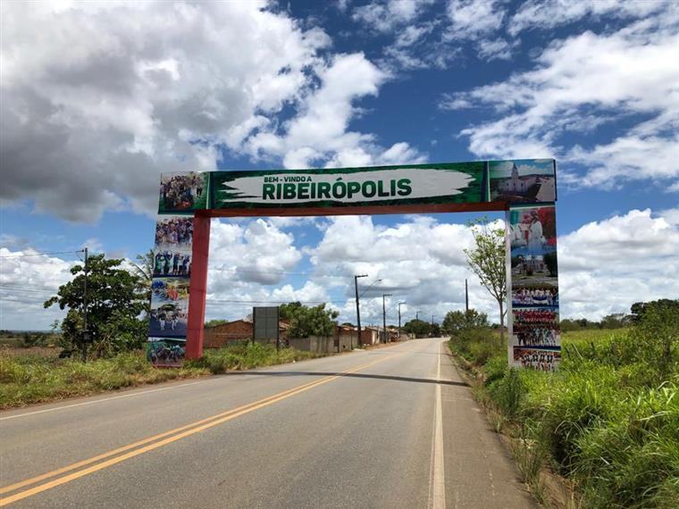

Ribeirópolis
História
Segundo o historiador Felisberto Freire, por volta do ano de 1637 um cidadão conhecido por “Ribeiro” instalava-se na região com a criação de gado em terras que se estendiam às proximidades da cidade de Itabaiana, originado aí uma povoação que recebeu o nome de “Saco do Ribeiro” em homenagem ao seu fundador, povoação que floresceu com essa denominação até o advento da Lei Estadual nº 997, de 29 de outubro de 1927 que lhe conferiu a elevação de distrito de paz pertencente ao município de Itabaiana, e com sede no povoado. Considerada a sua evolução política, seis anos depois o Interventor Federal Major Augusto Maunard Gomes, concluiu pela elevação do próspero povoado de Saco do Ribeiro à categoria de vila e sede de município, através do Decreto Estadual nº 188, de 18 de dezembro de 1933, alterando-lhe o topônimo para Ribeirópolis, até os dias atuais. Pelo Dec. Lei Estadual nº 69, de 28 de março de 1938, Ribeirópolis foi elevada a categoria de cidade.
fonte: https://cidades.ibge.gov.br/brasil/se/ribeiropolis/historicoDados Gerais de acordo com o IBGE
| Prefeito (a) | Rogério Sobral Costa |
| Vice-Prefeito (a) | Antonio Passos Sobrinho |
| Site do município | https://www.ribeiropolis.se.gov.br |
| Área territorial | 259,044 km² |
| População estimada | 18.891 pessoas |
| Densidade demográfica | 66,42 hab/km² |
| IDHM | 0,613 |
| PIB per capita | R$ 16.709,92 |